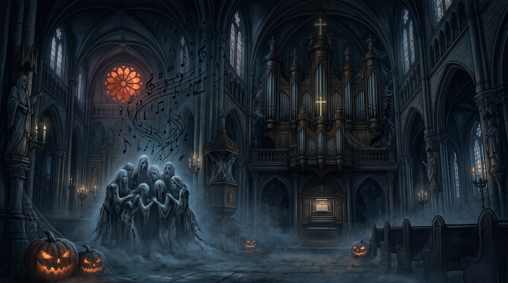

by Robert Graves 1895 – 1985
Gloomy and bare the organ-loft,
Bent-backed and blind the organist.
From rafters looming shadowy,
From the pipes’ tuneful company,
Drifted together drowsily,
Innumerable, formless, dim,
The ghosts of long-dead melodies,
Of anthems, stately, thunderous,
Of Kyries shrill and tremulous:
In melancholy drowsy-sweet
They huddled there in harmony.
Like bats at noontide rafter-hung.